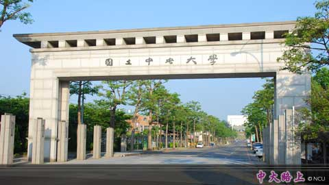
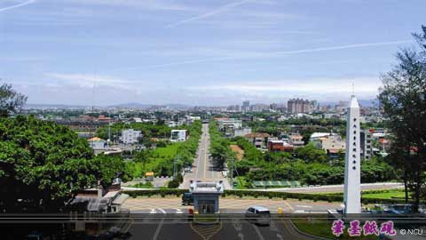
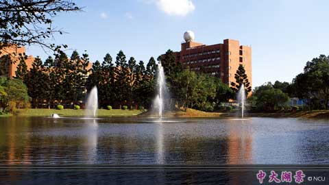

National Central University was originally founded in Nanjing, China in 1915. NCU had later developed into a renowned academic institution with comprehensive programs and outstanding faculty, enjoying a high reputation equal to that of Peking University. In 1962, the Graduate Institute of Geophysics was founded in Miaoli, Taiwan as the re-establishment of the University. The campus was relocated to Jhongli in 1968, and today it has become a home to more than thirteen thousand students and teachers.
As one of the leading universities in Taiwan, NCU has eight colleges: Liberal Arts, Science, Engineering, Management, Electrical Engineering and Computer Science, Earth Sciences, Hakka Studies, and Health Science and Technology, along with several research centers covering cutting-edge disciplines. NCU is also one of the members of the University System of Taiwan, sharing resources with Tsing Hua University, Chiao Tung University, and Yang Ming University.
In recent years, we have been selected twice in “The Aim for the Top University Project”, receiving grants from the Ministry of Education. The University has been evaluated “Excellent” for the past few years. We are now conducting research into four main fields: Environment and Energy, Complex Systems and Plasma Sciences, Optics and Opto-electronics, and Applied Informatics: Learning, Enterprise, Life. “Sincerity and Simplicity” is our motto, and this down-to-earth attitude will prevail deeper and wider. We endeavor to cultivate more brilliant minds and more leading pioneers with global vision, setting up NCU as a piloting academic establishment in the 21st century.


